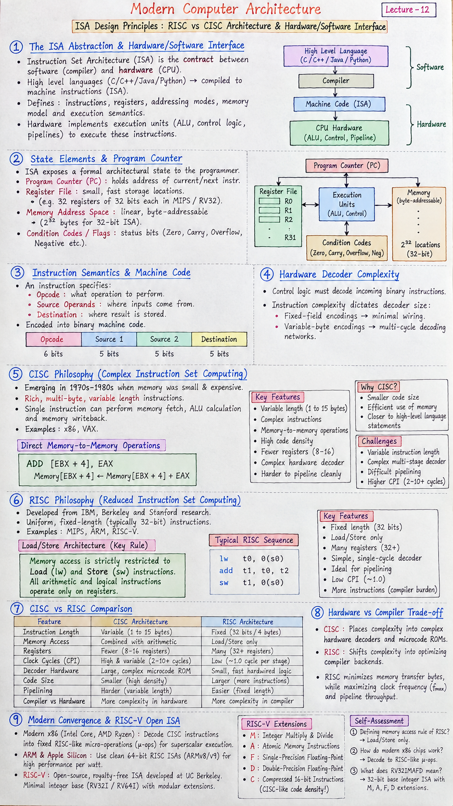

Short Notes & Visual Summary
Quick summary and architectural takeaways for Lecture 12:
- ISA Definition: The Instruction Set Architecture is the boundary contract between compilers (software) and CPU logic (hardware). It defines instructions, registers, memory modes, and execution semantics.
- CISC Philosophy (x86, VAX): Focuses on rich, multi-byte variable length instructions (1 to 15 bytes) that perform complex tasks (e.g. memory-to-memory math) to optimize precious RAM footprint.
- RISC Philosophy (MIPS, ARM, RISC-V): Employs uniform, fixed-length instructions (typically 32 bits) and a strict Load/Store architecture (only
lw/swaccess memory; ALU operates strictly on registers). - Modern Convergence: Modern x86 processors (Intel Core, AMD Zen) decode legacy CISC instructions on-the-fly into fixed RISC-like micro-operations (μ-ops) for superscalar execution.
CISC (Complex)
Variable Length (1-15 Bytes)
ADD [EBX], EAX (Memory + Register)
- High code density
- Complex, multi-stage hardware decoder
- Harder to pipeline cleanly
RISC (Reduced)
Fixed Length (32 Bits)
lw t0, 0(s0); add t1, t0, t2; sw t1, 0(s0)
- Strict Load/Store memory rule
- Simple single-cycle decoder
- Ideal for high-frequency pipelining

Click image to open high-resolution version in new tab
The ISA Abstraction & Hardware/Software Interface
1.1 The Hardware/Software Contract
The Instruction Set Architecture (ISA) forms the crucial contract between computer software and silicon hardware. High-level languages (C++, Python, Java) are compiled down to machine instructions specified by the ISA. Silicon engineers implement execution units (ALUs, control logic, pipeline stages) to execute these exact instructions.
1.2 State Elements & Program Counter (PC)
An ISA exposes a formal architectural state to the programmer:
- Program Counter (PC): Holds the memory address of the current or next instruction to execute.
- Register File: A small array of ultra-fast storage locations (e.g. 32 registers of 32 bits each in MIPS/RV32).
- Memory Address Space: Byte-addressable linear array of memory locations (\(2^{32}\) bytes for 32-bit ISAs).
- Condition Codes / Flags: Status bits (e.g. Zero, Carry, Overflow, Negative in x86/ARM).
1.3 Instruction Semantics & Machine Code
Instructions specify operational semantics: opcode (what operation to perform), source operands (where inputs come from), and destination (where the result is stored).
1.4 Hardware Decoder Complexity
The control logic must decode incoming binary instruction streams. Instruction complexity dictates decoder size: fixed-field encodings require minimal wiring, while variable-byte encodings require sequential multi-cycle decoding networks.
CISC Philosophy (Complex Instruction Set Computing)
2.1 Rich Variable-Length Encodings (x86, VAX)
CISC (Complex Instruction Set Computer) originated in an era (1970s–1980s) when main memory was extremely small and expensive. CISC ISAs aimed to provide rich instructions that mirrored high-level language statements directly.
- Instruction lengths vary from 1 byte to 15 bytes in x86.
- Single instructions can perform memory fetch, ALU calculation, and memory writeback.
2.2 Direct Memory-to-Memory Operations
In CISC architectures like x86 or VAX-11, ALU operations can take memory addresses directly as operands:
$$\text{ADD [EBX + 4], EAX} \quad \implies \quad \text{Memory}[\text{EBX}+4] \leftarrow \text{Memory}[\text{EBX}+4] + \text{EAX}$$2.3 Code Density & Memory Efficiency
Because single instructions encode complex tasks, compiled program binary size is small. Highly dense code reduced memory requirements on early computer systems.
2.4 Pipelining Bottlenecks in CISC
Variable instruction lengths and complex multi-cycle operations make standard clock-pipelining extremely challenging. Instruction fetch cannot know where instruction 2 starts until instruction 1's length is fully decoded.
RISC Philosophy (Reduced Instruction Set Computing)
3.1 Fixed 32-Bit Encodings (MIPS, ARM, RISC-V)
RISC (Reduced Instruction Set Computer) emerged from IBM, Berkeley, and Stanford research (Hennessy & Patterson). RISC enforces uniform, fixed-length (typically 32-bit) instructions with fixed field positions, allowing instant hardware decoding.
3.2 Load/Store Architecture Constraints
The hallmark rule of RISC is the strict Load/Store restriction:
Load (lw) and Store (sw) instructions. All arithmetic, logical, and comparison instructions MUST operate exclusively on internal registers.
3.3 Pipelining & Single-Cycle Execution
Fixed instructions allow instruction fetch, decode, execute, memory access, and writeback to execute in a streamlined 5-stage pipeline, targeting an ideal Execution Time Formula:
$$\text{CPU Time} = \text{Instruction Count} \times \text{CPI} \times \text{Clock Period}$$RISC lowers CPI (Cycles Per Instruction) to approximately 1.0 by simplifying pipeline execution.
3.4 Compiler Burden & Instruction Expansion
Because RISC instructions are simple, a program requires more total instructions than its CISC counterpart. The compiler assumes responsibility for scheduling register usage and optimizing instruction sequences.
Hardware vs Compiler Complexity Trade-Offs
4.1 Shifting Complexity: Hardware to Compiler
Neither CISC nor RISC eliminates intrinsic program complexity. CISC places complexity into complex hardware decoders and microcode ROMs; RISC shifts complexity into optimizing compiler backends.
4.2 Code Size vs. Decoder Simplicity
| Feature | CISC Architecture | RISC Architecture |
|---|---|---|
| Instruction Length | Variable (1 to 15 bytes) | Fixed (32 bits / 4 bytes) |
| Memory Access | Combined with arithmetic | Load/Store only |
| Registers | Fewer (8–16 registers) | Many (32+ general registers) |
| Clock Cycles (CPI) | High & variable (2–10+ cycles) | Low (~1.0 cycle per stage) |
| Decoder Hardware | Large, complex microcode ROM | Small, fast hardwired logic |
4.3 Memory Access Uniformity
RISC's uniform memory access prevents unexpected memory stalls mid-operation, simplifying hazard detection in execution pipelines.
4.4 Hardware/Software Trade-off Matrix
While CISC minimizes memory transfer bytes, RISC maximizes clock frequency (\(f_{\max}\)) and pipeline throughput.
Modern Convergence & RISC-V Open ISA
5.1 CISC Outside, RISC Inside (Micro-op Decoding)
Modern desktop/server processors (Intel Core, AMD Ryzen) resolve the CISC vs RISC debate via a hybrid model: the frontend accepts x86 CISC instructions and decodes them into uniform, RISC-like Micro-operations (μ-ops). The backend execution engine pipelines and reorders these μ-ops identically to a RISC core.
5.2 ARM & Apple Silicon Efficiency Dominance
Mobile devices and modern supercomputers (Apple M-series, ARM Neoverse, Fujitsu Fugaku) leverage clean 64-bit RISC ISAs (ARMv8/v9) for power efficiency and high execution throughput per watt.
5.3 RISC-V Open ISA & Modular Extensions
RISC-V is an open-source, royalty-free instruction set architecture developed at UC Berkeley. It features a minimal integer base (RV32I / RV64I) plus modular extensions:
- M: Integer Multiply & Divide
- A: Atomic Memory Instructions
- F: Single-Precision Floating-Point
- D: Double-Precision Floating-Point
- C: Compressed 16-bit Instructions (CISC-like code density!)
5.4 Comparison Matrix & Self-Assessment
Self-Assessment Check
- Q1: What is the defining memory access rule of RISC architectures?
Answer: The Load/Store rule: only explicit `lw` and `sw` instructions touch memory; all ALU ops work on registers. - Q2: How do modern x86 chips reconcile CISC compatibility with RISC pipelining?
Answer: By decoding variable-length x86 CISC instructions into fixed RISC-like micro-ops (μ-ops) in the hardware frontend. - Q3: What does RV32IMAFD represent in RISC-V terminology?
Answer: 32-bit base integer ISA with Multiply (M), Atomic (A), Single-float (F), and Double-float (D) extensions.
Original PDF Notes
Below is the original PDF document for your reference: